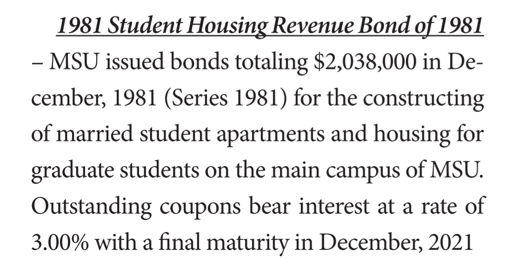
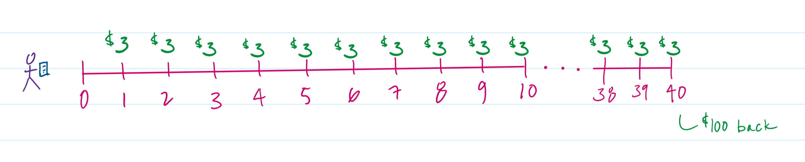
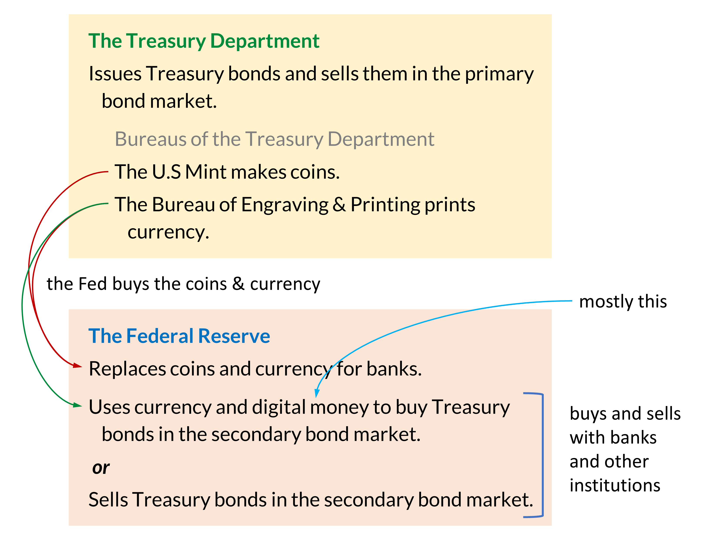
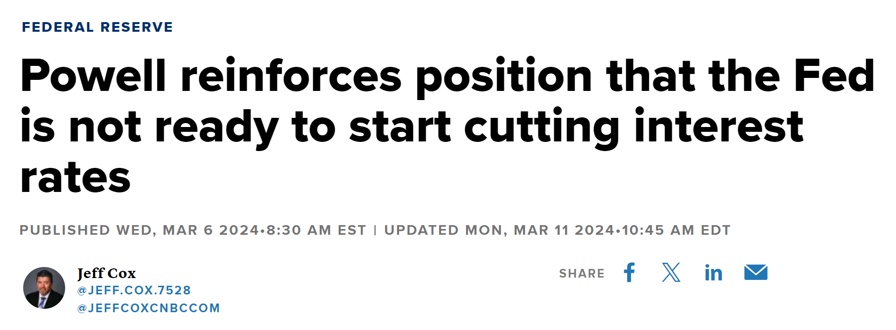

Monetary policy 2: Open market operations
The second, and more common, way that the Fed can affect interest rates is by engaging in open market operations.
Bonds
Before getting to open market operations, however, we have to look at how bonds are bought and sold.
Bond: A loan that includes an agreement to pay a fixed amount until the end of the loan period.
Here is a description of a 40 year bond that Mississippi State University made available to investors in 1981 to raise money for building student housing.

If someone bought a $100 Student Housing Revenue Bond of 1981 from Mississippi State, then every six months, this person would get $1.50 (and so, $3—i.e., 3% of $100—per year). This would continue for 40 years, at which point, the person would get his or her $100 back. For loaning MSU the $100 back in 1981, the bondholder would earn $120 (i.e., $3 every year for 40 years would come to $120).

Now, let’s say that you (or your parent or grandparent) bought this bond back in 1981. You get your $1.50 every six months, but after 10 years, you need some money. So, you decide to sell the bond on the secondary bond market. The person who buys this bond will get the payments every six months, and he or she will also get your $100 back in December 2021. So, in total, at this point, this bond is worth $190:
How much should someone pay for this bond? Not $190 because then this person would just, eventually, get back exactly what he or she paid for it. The idea is to pay less than this amount and make some money from the purchase.
How much someone pays depends on the other investment opportunities that are available and how safe an Mississippi State University bond is believed to be in 1991. (One risk of buying any bond is that the issuer might not be able to continue making interest payments or pay back the value of the bond. In other words, the issuer might default.) In any case,
Paying $100 would mean earning 3% interest for 30 years.
Paying less than $100 would mean earning more than 3% for 30 years.
Paying more than $100 would mean less than 3% for 30 years.
For instance, if someone bought the bond for $85, then this person would, in total, earn $105 ($90 from the interest payments plus $15 when the $100 was paid back). This, in effect, would be equivalent to earning $3.50 for each of the 30 years, and so this buyer would earn the equivalent of 4.1% per year ($3.50/$85 = 4.1%).
All this said, what we care about are U.S. Treasury bonds which are 30-year bonds, usually with an interest rate of about 2%. So, instead of Mississippi State University issuing the bond, the Treasury department does for the purpose of borrowing money for the federal government.
Figure 3 shows some of the responsibilities of the Treasury Department and the Federal Reserve Bank. Treasury bonds start their life when they are issued by the Treasury Department. These bonds can be held by one person until they mature, or as we discussed with the Mississippi State bond, they can be sold before they mature on the secondary bond market. The Federal Reserve gets involved in the secondary bond market.

Open market operations
Now, back to open market operations. Let’s say that this is the balance sheet for a bank that has a 10 percent reserve requirement. Since banks are earning interest on their loans while paying a lower rate of interest to depositors, a bank can have assets that are greater than its liabilities.
| assets | liabilities | ||||
|---|---|---|---|---|---|
| reserves | $1,000 | deposits | $10,000 | ||
| Treasury bonds | $500 | ||||
| loans | $9,000 | ||||
| total | $10,500 | total | $10,000 | ||
| net worth | $500 |
U.S. Treasury bonds are believed to be a very safe investment. The U.S. government will almost certainly make the interest payments and repay the value of the bond, and so, in addition to its reserves and loans, this bank is holding Treasury bonds as an asset.
Bonds and loose monetary policy
Now, let’s say that the Fed buys $200 worth of Treasury bonds from the bank. This means that the bank’s reserves increase by $200 and its bond holdings decrease by the same amount.
| assets | liabilities | ||||
|---|---|---|---|---|---|
| reserves | $1,200 | deposits | $10,000 | ||
| Treasury bonds | $300 | ||||
| loans | $9,000 | ||||
| total | $10,500 | total | $10,000 | ||
| net worth | $500 |
Given the 10% reserve requirement, the bank now has $200 more than it is required to hold in its reserves, and, unlike when the $200 was invested in bonds, the bank is not earning any interest by letting this money sit in its own vault. So, the bank will use the $200 to make loans. It makes the loans, and the individuals who received the loans immediately spend the money. Whoever gets the money then deposits it into the bank. Now, more loans can be made—repeat, repeat, repeat.
With $1,200 in reserves and a 10 percent reserve requirement, the bank will eventually be able to get to $12,000 in deposits—which we determine using the money multiplier formula. This means that the bank will have $10,800 in loans.
| assets | liabilities | ||||
|---|---|---|---|---|---|
| reserves | $1,200 | deposits | $12,000 | ||
| Treasury bonds | $300 | ||||
| loans | $10,800 | ||||
| total | $12,300 | total | $12,000 | ||
| net worth | $300 |
When we began—right before the Fed bought bonds from the bank—the bank had $9,000 worth of loans. Because of the Fed’s action, loans have increased to $10,800. This increase in borrowing (and the spending that goes with it) will, then, increase aggregate demand.
Increasing the supply of loanable funds
More precisely, by buying bonds, the Fed has increased the supply of loanable funds. This increase to the supply of loanable funds means that the supply curve shifts to the right, which lowers the interest rate. A lower interest rate, then, will cause more firms and consumers to get loans from the bank. As a result, aggregate demand increases.
{kind=link}
Bonds and tight monetary policy
By selling bonds to the bank, the Fed can do the reverse. Let’s start with this balance sheet again.
| assets | liabilities | ||||
|---|---|---|---|---|---|
| reserves | $1,000 | deposits | $10,000 | ||
| Treasury bonds | $500 | ||||
| loans | $9,000 | ||||
| total | $10,500 | total | $10,000 | ||
| net worth | $500 |
The Fed sells $200 worth of bonds to the bank. This will decrease the amount that the bank is holding in reserve because $200 was used to buy the bonds.
| assets | liabilities | ||||
|---|---|---|---|---|---|
| reserves | $800 | deposits | $10,000 | ||
| Treasury bonds | $700 | ||||
| loans | $9,000 | ||||
| total | $10,500 | total | $10,000 | ||
| net worth | $500 |
Because the bank is not, at the moment, holding 10% of it’s deposits in reserve, it has to adjust the amount of loans and deposits that it has. Therefore, it will undertake the same process as it does when the Fed raises the reserve requirement.
Money is taken from deposits and used to repay loans. (When money is withdrawn it is taken from reserves, but when it given to the bank as repayment for the loan it is put into reserves. Hence, reserves remain constant.) This process will be repeated until the bank has this balance sheet—which we find by using the money multiplier formula:
| assets | liabilities | ||||
|---|---|---|---|---|---|
| reserves | $800 | deposits | $8,000 | ||
| Treasury bonds | $700 | ||||
| loans | $7,200 | ||||
| total | $8,700 | total | $8,000 | ||
| net worth | $700 |
Now, the bank is meeting the 10% reserve requirement. (Note)
When we began—right before the Fed sold bonds to the bank—the bank had $10,000 of deposits and $9,000 worth of loans. Because of the Fed’s action, loans have decreased to $7,200. This decrease to borrowing (and the spending that goes with it) will, then, decrease aggregate demand.
Decreasing the supply of the loanable funds
More precisely, the Fed’s action caused the supply of loanable funds to decrease. This causes the interest rate to rise, which causes borrowing to decrease.
The Fed and monetary policy
It is easier to understand monetary policy, at least to the extent that we have covered it here, if you see that (1) the Fed lowering the reserve requirement and (2) the Fed buying bonds from the bank both have the same immediate effect: the bank has more in reserves than it is required to hold. Hence, the supply of loanable funds has, for the bank, suddenly increased.
This increase to the supply of loanable funds, then, has an effect on interest rates, borrowing by firms and consumers (i.e., the amount of loans), purchasing, and aggregate demand. This change to aggregate demand, then, changes the price level, GDP, and the unemployment rate—at least according to the AD-AS model.
Similarly, (1) the Fed raising the reserve requirement and (2) the Fed selling bonds to the bank also have the same immediate effect: the bank has less in reserves than it is required to hold. Hence, the supply of loanable funds has, for the bank, suddenly decreased. Again, this affects interest rates, borrowing, purchasing, and aggregate demand.
The federal funds rate
When the Fed engages in buying and selling bonds to implement a monetary policy, what we see in the news is “the Fed is raising [or lowering] interest rates.” The Fed is not, however, directly controlling interest rates (and it can’t). It’s only buying and selling Treasury bonds.

But it does this buying and selling with the intention of moving a specific interest rate called the “federal funds rate.”
Federal funds rate: The interest rate that banks charge when they make short-term loans to each other; these are usually overnight loans, which a bank might need to meet its reserve requirements.
The federal funds rate is not an interest rate that an individual or a firm will ever have on a loan, but it indirectly affects the interest rates that we do have on loans, as well as the interest we earn by depositing money in savings accounts. So, if the federal funds rate is rising, other interest rates will rise. And if it is falling, other interest rates will fall.